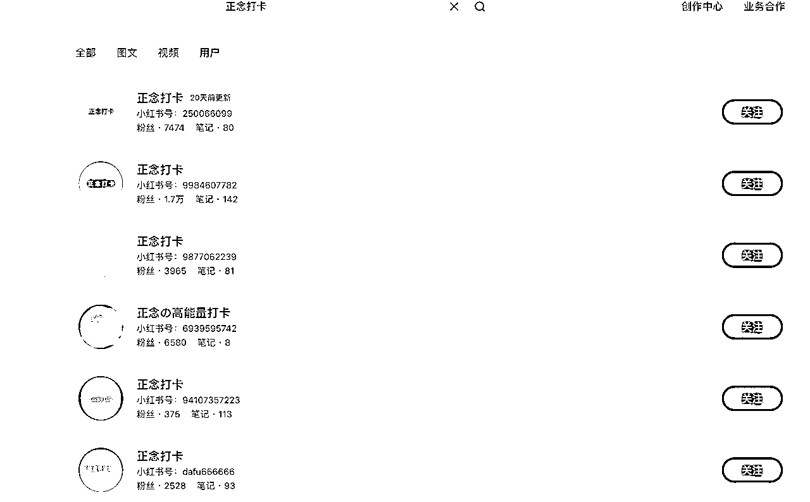

来源：https://urh4zarsm8.feishu.cn/docx/XJWWdz0FsoGEAhxZNSScpRZ9nfb
哈咯大家好，我是东篱！之前通过小红书运营了一个正念打卡号，成功涨粉到7000+。这个账号主要吸引备考学生和职场压力群体，通过「每日治愈图文+励志语录」的内容设计，帮助用户缓解焦虑。我还在评论区设置了「今日打卡」互动，进一步提升了粉丝粘性。
在积累了一定粉丝后，我通过接广告实现了变现，主要走蒲公英平台的报备广告，同时也接了一些不报备的广告合作。整个项目的核心是通过对标账号，设计出统一的底图模板，每天发布5-10篇笔记测试流量。一旦发现某个封面或选题有流量，我就会持续发布相关选题，逐步优化内容策略。
这个项目的成功关键在于精准的人群定位、高效的爆款测试以及持续的互动运营。
小红书商单号项目是指通过运营小红书账号，接取品牌或商家的推广订单，实现盈利的一种方式。通过发笔记，涨到了1000以上粉丝，入驻蒲公英成为达人，从而会收到各大品牌方和广告主的邀约，进行付费的广告笔记植入。小红书达人通过接广告合作获得收益，1单最低是100元起。
总结来说，小红书商单号就是通过涨粉突破1000之后，进行接广告变现的一种方式。
对新人来说简单，容易获得正反馈。因为我通过观察小红书的一些商单号。其实是有模板的。
可以通过模板进行简易改动。从而高效生成爆文。
找对赛道后，10 到15天左右逐渐开始涨粉，普遍1个月左右达成千粉目标，然后入驻蒲公英，开始接广告变现。单月单号平均变现区间，为1500-2000元左右


我首先找了10-20个同领域的对标账号，观察他们的流量和数据表现，筛选出数据较好的账号作为参考。
接着，我深入分析这些对标账号的特点，包括：

确定对标账号后，我开始设计自己的内容模板。最初我选择了一个蓝色的模板，但发现效果不理想，于是不断调整和优化。
经过多次测试，我尝试了不同的颜色和款式，最终确定了黄色的模板，发现它的点击率和互动效果最好。
我的文案素材主要来自对同行爆款内容的收集和整理。我会把优质的爆款文案存入我的选题库，然后从中筛选出适合我账号的文案进行测试。
每天我会发布10篇左右的笔记，第二天观察哪些选题火了。对于表现好的选题，我会继续围绕这个方向发布类似的内容，不断测试和优化，直到找到最稳定的爆款公式。
4持续优化与迭代
通过这种“测试-筛选-复制”的方式，我逐渐摸清了用户的喜好和平台的流量规律。一旦某个选题爆了，我会持续围绕这个选题发布内容，同时不断优化封面、标题和文案，确保每次发布都能获得稳定的流量。

同城热点/本地生活
正念打卡
考公/考研/考证每日一题赛道
热评赛道（截屏热门评论）

情感文案语录
个人成长账号
爆款的本质是：重复验证的用户需求
我通过大量选题测试和内容库搭建，总结出一个核心逻辑：内容创作的起点绝不是自我表达，而是从爆款中挖掘共性规律。当你一头扎进创作时，很容易陷入三个致命误区：
把“我会写什么”当作创作方向，而非“用户需要什么”。就像给沙漠里的人推销雨伞——产品再精致，需求错配注定失败。
精心打磨的封面/标题/内容，本质是未经市场验证的“实验室产品”。爆款之所以能重复，是因为它通过了用户用指尖投票的残酷公测。
新人总想标新立异，但商业级内容需要的是“70%验证框架+30%微创新”。就像连锁餐饮的爆品公式：经典口味+季节限定包装。
真正的爆款逻辑藏在两个动作里：
✅ 逆向拆解：用鹰眼视角扫描100篇同赛道爆文，提取「用户需求坐标轴」——高频词=痛点，高赞点=爽点，高收藏=痒点
✅ 业化生产：把验证过的选题/结构/关键词做成可复用的SOP模板，像流水线生产iphone一样稳定输出内容
爆款不是创作出来的，是用户用行为数据标注出来的“需求地图”。先当考古学家挖掘规律，再当工程师批量生产，这才是内容变现的终极法则。
经过分析，可以发现这些笔记精准符合爆款笔记的四大核心特点：

比如最近deep seek相关的内容就是一个大热点。
2.测试流量：
可画和创可贴里面也有不少的模板
可以用可画https://www.canva.cn、创可贴https://www.liblib.art/?sourceId=002238&bd_vid=11534515114660991019
比如我的模板里面都是统一的底图。头像也是底图。比较有辨识度。
改写对方的内容的指令：帮我改写这篇文章/笔记。
根据主题内容要求AI写笔记：
指令1:
背景：我在小红书上运营一个职场教人写简历的账号，95后的猎头。
角色：你是一名资深的小红书文案专家，精通编写用户喜欢的小红书爆款文案。
任务：请你帮我围绕主题“XXXXXXX”写一篇小红书爆款文案。
要求：
1、表达要口语化
2、标题吸引人
3、内容要多使用emoji表情图标
4、内容适当描述自己的使用体验和评价
5、文案不要超过500字
6、文案最后生成相关的标签
指令2：
1.理解身份：你是一个30岁培训与人才发展专家，乐于在小红书上分享“职场提升”“职业规划”“简历面试辅导 ”的技巧。专门针对于刚刚毕业的大学生做简历辅导。
2.标题：今天面试一位qs前五十硕士，简历很加分
3.具体内容：以排版、主次分明、定量指标这3个方向写。
1、表达要口语化
2、内容要多使用emoji表情图标
3、文案不要超过500字
4、文案最后生成相关的标签
指令3：
1)我是一名小红书博主，我是做母婴赛道的，我准备写一篇名为《新手妈妈预防产后脱发 需要准备哪些物品》的笔记，我看到一篇写减脂零食的合集笔记，收藏量有 2.5 万，我想模 仿它来写，请你作为一名资深的小红书博主，帮我分析下这篇笔记，为什么能成为爆款:(笔 记内容)
指令4:
你是一位小红书运营专家，帮我分析一下以上这段文案的结构和写作手法。
根据以上你分析的这些写作手法、技巧和框架，帮我写一篇爆款小红书笔记
主题: 经历只有两句话，也能写一篇满分简历？
要求: 帮我生成一个有吸引力的笔记标题，在笔记当中需要加上适当的表情符号
指令5:
第二个指令是“请将这段文案，用小红书的风格，在不改变原意的前提下进行改写，要求有emoji表情，字数不少于原文”
指令6:
1)请你作为一个爆款标题生产器，听我的命令。 2)在小红书上，有这些爆款标题关键词，请你学习后，再听我的指令。(输入热门关键词， 可去小红书搜索)
3)(分析)这些爆款标题的风格和特点是什么，告诉我 4)请你根据我的笔记内容，按照上述的风格和特点，并参照我给你的标题模板(用户+应用 场景+解决方案+收获/损失)生产 20 个爆款标题。要求，不能超过 20 个字。(输入你的笔 记内容)
指令7:
大家可以根据这个的领域改写这个提示词。
常用的大模形（目前测试下来还是deep seek最好用
Deepseek :https://www.deepseek.com
通义千问：https://tongyi.aliyun.com/qianwen/?spm=5176.2810346&code=sw31xf0id8&utm_content=se_1017929123&sessionId=2f026ac442414945b5419eb18fc3711f
智普清言：https://chatglm.cn/main/alltoolsdetail?lang=zh
KIMI：https://kimi.moonshot.cn/chat/cmn3idmcp7ffa32gl4rg
月之暗面：https://www.moonshot.cn
多浏览同行的热门笔记，尤其是同类的内容，记录下那些吸引人的标题。可以借鉴这些标题的模板，稍作修改后使用。需要注意的是，小红书的标题往往注重情感共鸣，情绪价值是关键。
不懂怎么起的可以直接搜同款笔记。组合他们笔记关键词也可以。
就是触发互动行为的要素，一篇笔记的互动指数高，才可以打开流量开关，有源源不断的流量进来。
比如：宝子们下周想看什么内容呢？
评论区设置一些接龙。
在正文的内设置一些有争议的内容引起评论区的互动。
官方高危词库分享：写完文案后，自查是否有违禁词
https://www.check51.com/text-detection
其他查违禁词网站：
https://pgy.xiaohongshu.com/help/list?id=174&userType=4
http://www.foryet.net/
CES 内部评分=点赞数x1分+收藏数x1分+评论数x4 分+转发数x4 分+关注数x8分。
这公式可能有些圈友看不懂是什么意思，我来简单的给你们解释下
这个公式是小红书平台用来评估笔记表现的一个内部评分机制，叫做“CES 内部评分”。它的计算方式是这样的：
CES 内部评分 = 点赞数 × 1分 + 收藏数 × 1分 + 评论数 × 4分 + 转发数 × 4分 + 关注数 × 8分
简单来说，平台会根据用户对你笔记的互动行为，给你打一个分数。不同的互动行为，分值也不同：
这个分数越高，说明你的笔记越受欢迎，平台就会给你更多的流量推荐。相反，如果分数低，流量也会减少。
举个例子：
这个分数会被用来和同类型、同时间段的笔记进行对比。如果你的分数更高，平台就会给你更多的流量推荐，让你的笔记被更多人看到。
总结一下：**互动越多，分数越高，流量就越多！** 所以，想要获得更多流量，就要努力提升笔记的互动数据哦！
所以在发布笔记之后。可以自己叫几个水军先评论一些打卡的评论。或者是有争议的评论
比如我做的是正念打卡的账号。所以每次笔记发布之后。我会先找朋友布局几个祝福的祈祷的评论。
在运营正念打卡号的过程中，我特别注重发布符合目标人群需求的选题，尤其是结合热点来吸引流量。
其中有一次成功的案例让我印象深刻——当时正值考研和考公的高峰期（12月到1月），我的粉丝中有很多是备考的学生。为了抓住这个时机，我发布了一篇以“考研考公顺利上岸”为主题的笔记，内容围绕备考心态调整和正能量鼓励展开。
这篇笔记不仅切中了学生群体的痛点，还通过情感共鸣引发了大量的互动和转发，最终带来了5000+的涨粉。这次经历让我意识到，抓住热点并结合目标人群的需求，是快速提升账号影响力的有效策略。

一开始我做正念打卡账号的时候。就挺纠结模板的选择。后面选了好几款和同行一样的模板。
但是做起来曝光、点赞涨粉都不是很高。就陆续测了好几个模板。最后才定下来这个黄色的模板的，
第一步：升级个人专业号
第二步：开通蒲公英“内容合作”
入驻蒲公英后，保持高质量内容更新和合理的报价设置是关键。初期以积累合作经验为主，后期随着粉丝增长逐步提高报价，实现收益最大化！
彩蛋：
居然和喜欢的博主互关啦～～～